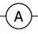
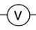
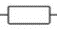
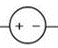

Objetivos
- Comparar el valor nominal de varias resistencias con el valor obtenido midiendo con un multímetro y con el calculado con la ley de Ohm
- Comprobar el valor de la resistencia equivalente de:
- dos resistencias en paralelo
- dos resistencias en serie
- Comprobar que la línea característica de la tensión en función de la intensidad es lineal para un resistor y no lineal para una bombilla incandescente
Material
- Fuente de alimentación de corriente continua
- Dos multímetros para medir la tensión y la intensidad
- Una tabla con nueve resistencias diferentes
- Cables de conexión con bananas en los extremos
- Bombilla incandescente
Fundamentos Teóricos
La Ley de Ohm
La Ley de Ohm describe la relación entre la tensión (\(V\)), la corriente (\(I\)) y la resistencia (\(R\)) en un circuito eléctrico. Esta ley establece que, para un conductor metálico a temperatura constante, la cantidad de corriente que fluye a través de él es proporcional a la tensión aplicada al conductor. Matemáticamente, se expresa como:
\[ I = \frac{V}{R} \]
Donde:
- \(I\): Intensidad de corriente en amperios (A).
- \(V\): Tensión en voltios (V).
- \(R\): Resistencia en ohmios (\(\Omega\)).
Esta ley es fundamental en la teoría de circuitos y se utiliza ampliamente para analizar y diseñar sistemas eléctricos.
Resistencia Equivalente
La resistencia equivalente es el valor de resistencia que puede sustituir a un conjunto de resistencias conectadas en un circuito sin alterar las condiciones eléctricas. Las resistencias pueden asociarse en serie o en paralelo.
Asociación en Serie
Dos o más resistencias están en serie cuando cada una se encuentra conectada a continuación de la otra en el mismo hilo conductor (ver Figura 1). La resistencia equivalente (\(R_{\text{eq}}\)) de una asociación en serie se calcula como:
\[ R_{\text{eq}} = R_1 + R_2 + \dots + R_n \]
Asociación en Paralelo
Dos o más resistencias están en paralelo cuando comparten los mismos extremos (ver Figura 1). En este caso, la tensión (\(V\)) aplicada a cada resistencia es la misma, pero la corriente (\(I\)) se divide entre ellas.
La resistencia equivalente (\(R_{\text{eq}}\)) de una asociación en paralelo se calcula como:
\[ \frac{1}{R_{\text{eq}}} = \frac{1}{R_1} + \frac{1}{R_2} + \dots + \frac{1}{R_n} \]
Valor Nominal de las Resistencias y el Código de Colores
Valor Nominal de las Resistencias
El valor nominal de una resistencia indica su resistencia eléctrica, expresada en ohmios (\(\Omega\)), y es un parámetro crucial para seleccionar resistencias adecuadas en circuitos eléctricos. Este valor puede estar indicado de dos formas:
- Directamente impreso: En resistencias grandes, el valor nominal puede estar escrito en su superficie, junto con su tolerancia.
- Mediante código de colores: En resistencias pequeñas, el valor nominal se representa con un sistema de bandas de colores.
Código de Colores
El código de colores es un sistema estándar para indicar el valor nominal y la tolerancia de las resistencias. Este código utiliza bandas de colores que representan cifras y factores multiplicativos. Una resistencia típica tiene 4, 5 o 6 bandas:
- Las primeras dos (o tres) bandas representan los dígitos significativos.
- La siguiente banda es el factor multiplicativo.
- La última banda indica la tolerancia, que expresa el margen de error del valor nominal.
Tabla de Colores y sus Valores
| Color | Dígito | Multiplicador | Tolerancia |
|---|---|---|---|
| Negro | 0 | \(10^0 = 1\) | - |
| Marrón | 1 | \(10^1 = 10\) | ±1% |
| Rojo | 2 | \(10^2 = 100\) | ±2% |
| Naranja | 3 | \(10^3 = 1,000\) | - |
| Amarillo | 4 | \(10^4 = 10,000\) | - |
| Verde | 5 | \(10^5 = 100,000\) | ±0.5% |
| Azul | 6 | \(10^6 = 1,000,000\) | ±0.25% |
| Violeta | 7 | \(10^7 = 10,000,000\) | ±0.1% |
| Gris | 8 | \(10^8 = 100,000,000\) | ±0.05% |
| Blanco | 9 | \(10^9 = 1,000,000,000\) | - |
| Dorado | - | \(10^{-1} = 0.1\) | ±5% |
| Plateado | - | \(10^{-2} = 0.01\) | ±10% |
| Nada | - | - | ±20% |
Ejemplo de Interpretación
Supongamos una resistencia con las siguientes bandas de colores: Marrón, Negro, Rojo, Dorado:
- Marrón (1): Primer dígito = 1.
- Negro (0): Segundo dígito = 0.
- Rojo (x100): Multiplicador = \(10^2 = 100\).
- Dorado (±5%): Tolerancia = ±5%.
El valor nominal de esta resistencia es \( R_n \), con una tolerancia de ±5%, lo que significa que su resistencia puede variar entre 950 \(\Omega\) y 1,050 \(\Omega\).
En la Figura 2 se pueden ver más ejemplos de como calcular los valores nominales de una resistencia

Curva Característica V-I
La curva característica V-I de un componente eléctrico es una representación gráfica que muestra cómo varía la tensión (\(V\)) en función de la intensidad (\(I\)) aplicada. Dependiendo del comportamiento del componente, esta curva puede ser lineal o no lineal:
- Resistencia Lineal: Para una resistencia en condiciones ideales (baja potencia disipada y temperatura constante), la curva V-I es una línea recta que obedece la Ley de Ohm.
- Resistencia No Lineal: En componentes como bombillas, donde la potencia aplicada aumenta la temperatura, la resistencia varía. Esto provoca que la curva V-I deje de ser lineal.
En esta práctica, observará estos dos casos utilizando un resistor y una bombilla de luz.
Tarea 1A: Valores nominales y medida directa de una resistencia
- Mide con el multimetro el valor del resistor número 1 como se muestra en la Figura 3. Para ello conecta un cable entre un extremo del resistor y la salida COM (Común) del multimetro. Conecta otro cable entre el otro extremo del resistor y la salida del multimetro con la etiqueta de la letra griega omega, \(\Omega\), que es el símbolo que representa al ohmio.
- Coloca el selector del mutímetro (la rueda) en la etiqueta donde pone ohmios \(\Omega\). Anota el resultado obtenido con el multímetro \( R_m\) en la Tabla 1A. No olvides indicar las unidades, si la resistencia es mayor de 999 \(\Omega\) indica los resultados en \(\ K\ Omega\)
- Repite el procedimiento para el resto de resistores de la tabla.
- Saca una foto a la tabla de resistencias, asegurandote de que se aprecian bien las bandas de colores de las resistencias. En casa, usa la foto para calcular los valores nominales de las resistencias \( R_n \)

Tarea 1B: Ley de Ohm
Vamos a medir el valor de las resistencias usando la ley de Ohm, para lo que necesitamos conocer la tensión entre los extremos de la resistencia y la intensidad que la atraviesa. Para eso montaremos el circuito de la figura Figura 1 con el resistor número 1.
| Componente | Símbolo | Descripción |
|---|---|---|
| Amperímetro |  | Mide la intensidad de corriente que fluye por el circuito. |
| Voltímetro |  | Mide la tensión eléctrica entre dos puntos del circuito. |
| Resistencia |  | Limita la corriente en un circuito eléctrico. |
| Fuente de Tensión |  | Proporciona energía eléctrica al circuito. |
- Comenzamos a montar el circuito sin el voltímetro, solo con los elementos conectados en serie (la parte en gris de la Figura 3). Conecta con un cable, el polo positivo de la fuente de alimentación con un extremo de la resistencia (P).
- Conecta con otro cable el otro extremo de la resistencia (M) con el puerto de corriente baja del amperímetro. La Figura 5 indica como se tiene que poner el multimetro para que funcione como amperímetro.
- Para cerrar el circuito conecta el puerto COM del amperímetro con el polo negativo de la fuente de alimnetación.
- Por último conectamos el voltímetro entre los extremos de la resistencia. Conecta un extremo de la resistencia con la salida COM del multímetro y el otro extremo con el puerto de voltaje. La Figura 6 indica como se tiene que poner el multimetro para que funcione como voltímetro.
- ·Enciende la fuente de alimentación y usando las ruedas
- Antes de tomar medidas consulta con el profesor del laboratorio si el circuito está bien montado.
- Antes de tomar medidas consulta con el profesor del laboratorio si el circuito está bien montado.
- Repite el procedimiento para el resto de resistores de la tabla menos el 10.

Tarea 2: Resistencia Equivalente
En esta tarea vamos a medir la resistencia equivalente de los resistores número 3 y 4 cuando están en serie y en paralelo y vamos a compararlos con sus valores teóricos
- Monta el circuito de la figura, donde los resistores 3 y 4 estan conectados en paralelo. El voltimetro mide la tensión en los extremos de la resistencia equivalente y el amperimetro la intensidad que la atraviesa. Se trata simplemete de volver a montar el circuito de la Figura ?? y a continuación conectar el resistor número 4 en paralelo con el resistor número 3.
- Enciende de nuevo la fuente de alimentación y ajusta la tensión a unos 15 V. Apunta la tensión y la intensidad marcarda por los multímetros.
- Anota el valor del campo magnético en el centro de la espira (distancia cero) \( B_0 \). Apunta la posición del teslámetro sobre el carril usando la regla que el carril lleva incorporada \(p_0 \)
- Aleja el teslámetro de la bobina moviendolo sobre el carril hasta que el valor del campo magnético se reuzca al 10% del valor inicial \( B_0 \). Anota la posición del teslámetro sobre el carril (\(p_{10} \)) y el valor del campo magnético
- Toma medidas del campo magnético en al menos nueve posiciones intermedias entre \(p_0 \) y \(p_{10} \) que estén distribuidas uniformente.
Tarea 3: Líneas V-I características
- Monta de nuevo el circuito de la Figura 5 para la resistencia número 10.
- Fija la fuente de tensión a aproximadamente 1 V y anota en la tabla el valor de la tensión y la intensidad en la resitencia que marcan los multimetros.
- Repite el paso anterior para valores de tensión hasta unos 10 V con pasos aproximados de 1 V.
- Apaga la fuente de alimentación y pon todos los valores a cero
- Anota la temperatura ambiente del laboratorio
- Calcula usando el multímetro el valor de la resistencia de la bombilla incandescente a temperatura ambiente
- Sustituye el resistor número 10 por la bombilla incandescente y calcula como varía la intensidad en función de la tensión siguiendo el mismo procedimiento que has usado para el resistor número 10
- Sustituye la bobina de 8 espiras por la bobina con \( D = 2000 \)espiras como se muestra en la Figura ??. Coloca la punta del teslametro en el centro de la bobina y a mitad de su recorrido. En ese punto el campo magnético es máximo.
- Enciende la fuente de alimentación y con mucho cuidado fija la intensida de corriente a 150 mA. Evita intensidades altas para el tubo (sonda) Mantén la corriente fija en 150 mA y ajusta el teslámetro a cero antes de cada mediciónEnciende de nuevo la fuente de alimentación y ajusta la intensidad a unos 3 A Anota el valor del campo magnético en el centro de la espira (distancia cero) \( B_0 \). Apunta la posición del teslámetro sobre el carril usando la regla que el carril lleva incorporada \(p_0 \)
- Aleja el teslámetro de la bobina moviendolo sobre el carril hasta que el valor del campo magnético se reuzca al 10% del valor inicial \( B_0 \). Anota la posición del teslámetro sobre el carril (\(p_{10} \)) y el valor del campo magnético
- Toma medidas del campo magnético en al menos nueve posiciones intermedias entre \(p_0 \) y \(p_{10} \) que estén distribuidas uniformente.